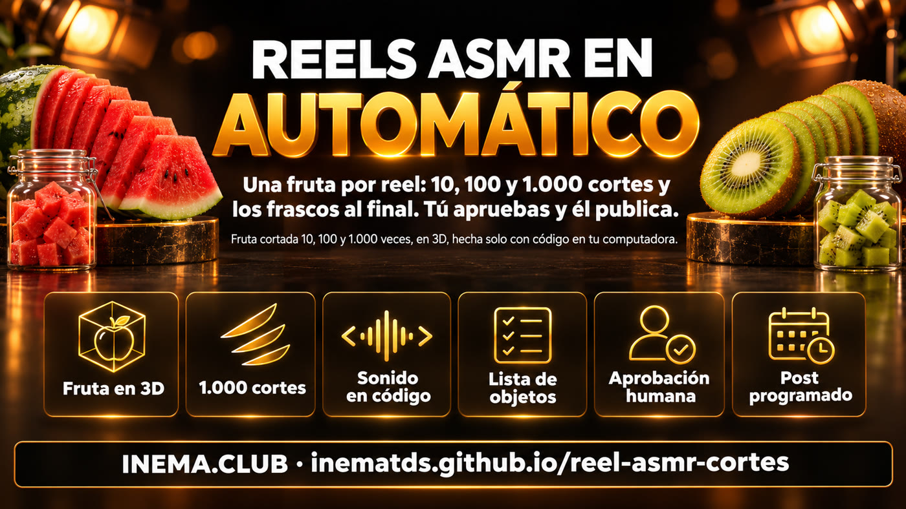
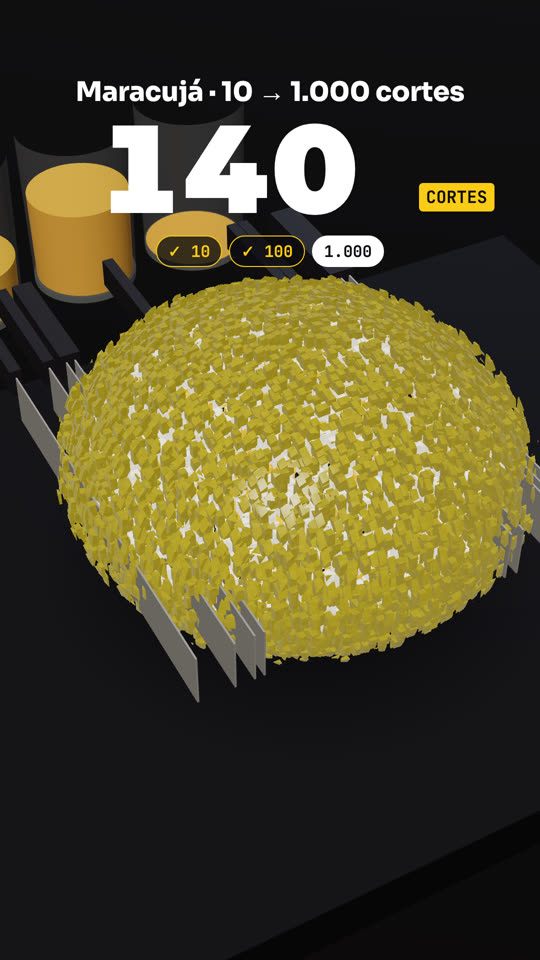
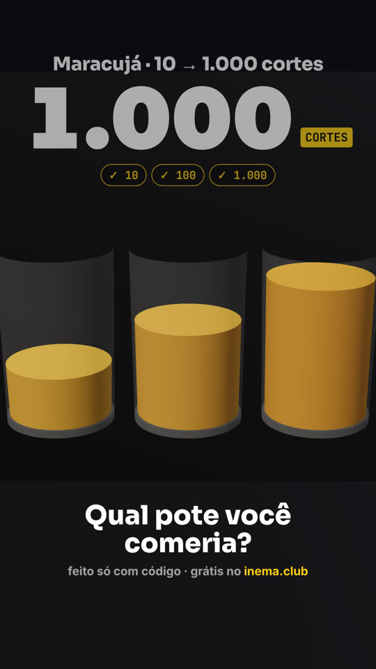

Puedes tener 3 reels satisfactorios por semana sin grabar nada. La Fábrica de reels ASMR los hace por ti.
Un video de fruta cortándose atrapa la mirada, pero hacerlos uno por uno cansa y frena el canal. Aquí el reel sale de tu computadora, gratis, y solo se publica lo que tú apruebes.
Los reels "satisfactorios" (ASMR) mantienen a la gente frente a la pantalla, pero producirlos cada semana cuesta trabajo. Este kit hace un reel vertical de 36 segundos en el que una fruta en 3D se corta 10, 100 y 1.000 veces, con el sonido de cada corte y tres frascos al final. Todo lo dibuja el código en tu computadora: sin cámara, sin IA de video y sin pagar por render. Una lista de frutas se convierte en una serie; un agente (Claude Code o Codex) hace 3 por semana, tú lo ves y lo apruebas, y un script lo publica en Instagram por la API oficial. Para usarlo: Node.js, ffmpeg y, si quieres la publicación automática, una cuenta profesional de Instagram.

Video
Entiéndelo en 2 minutos
Del gancho al final: la lista de frutas, los cortes de 10, 100 y 1.000 veces hechos en tu computadora y la aprobación que queda contigo.
Una promesa simple en el primer cuadro y un número que solo crece. La persona se queda para ver los 1.000 cortes y el frasco al final.
0 s · la portada ya dice lo que va a pasar3 s · 10 cortes: las rebanadas se abren y muestran el interior

24 s · ronda de 1.000: se vuelve un montón de trocitos

34 s · los 3 frascos y la pregunta para comentar
📈 Crece 10 veces en cada ronda
10, luego 100, luego 1.000 cortes, cada ronda más rápida. El contador grande arriba deja la promesa a la vista todo el tiempo.
🔊 Cada corte tiene sonido
El golpe de la cuchilla en la tabla, el crujido de las semillas, el trozo cayendo en el frasco. Todo cae en el cuadro exacto del corte, porque el sonido y la imagen leen la misma lista.
🫙 Termina con una pregunta
"¿Qué frasco te comerías?" Tres resultados lado a lado invitan al comentario, sin pedir like ni enlace.
La semana
Así queda tu semana: tú solo apruebas
Dos tareas programadas hacen el trabajo repetitivo. La decisión de qué se publica sigue siendo tuya.
Lunes 9 h: el agente hace 3 reels→Tú los ves y apruebas→Lun, mié y vie 18 h: publica 1 aprobado
🍊 Una lista se vuelve serie
Cada línea de la lista es una fruta (maracuyá, cebolla morada, guayaba, tomate…). El encuadre, el ritmo y el sonido quedan iguales; solo cambia el objeto. Eso hace que el canal se vea como una serie.
✋ Nada se publica sin ti
Las tareas nunca marcan un reel como aprobado. Tú lo ves, y solo lo que apruebas entra en la fila de publicación.
💸 Costo de render: cero
El video se dibuja en tu computadora. Lo único que pagas es el plan del agente que ya usas. La app de Meta y GitHub Pages son gratis.
¿Prefieres publicar a mano? Puedes detenerte en el paso de aprobar: la app de Instagram programa publicaciones, y el texto de cada reel ya viene listo en un archivo de texto. La parte de la publicación automática es opcional. Cómo usarlo ↓
Parte técnica
El kit: para quien quiere montar la fábrica
De aquí para abajo es la parte técnica: instalar, hacer el primer reel, activar la serie y la publicación. No necesitas esta parte para entender lo de arriba.
Qué es
Un proyecto HyperFrames + Three.js con tres piezas
HyperFrames convierte una página HTML en video, cuadro por cuadro. Three.js dibuja el 3D dentro de esa página.
🍈 El reel
index.html + js/mundo.js: la fruta es una elipse dividida en cubitos; un shader corta cada cubito por la elipse y pinta la cara con el color de ese punto del interior (cáscara, piel, pulpa, semillas, anillos).
⏱️ Un solo reloj
js/cortes.js es la lista de cortes (1.110 en total). El contador, las cuchillas y el sonido leen esa lista. La semilla del azar cambia en cada reel, así que cada uno corta distinto.
📦 La fábrica
objetos.csv + ferramentas/: preparar el siguiente reel, hacerlo (sonido, revisión, fotos, render), aprobar y publicar. Dos prompts listos en agendar/ (en portugués).
Cómo funciona
De una línea de la lista a la publicación
Cada objeto pasa por 5 estados en objetos.csv. Solo uno pasa por ti.
Cuenta profesional de Instagram (creador o empresa), cuenta gratuita de desarrollador de Meta y un repositorio público en GitHub para servir el video. Paso a paso en SETUP.md (en portugués).
Guía de uso · paso a paso
Del primer reel a la serie en automático
Los pasos 1 a 4 hacen reels. El 5 y el 6 son para publicar solo y programar.
1
Descargar y hacer el reel de ejemplo
El sonido tiene que ir antes del render. La revisión tiene que terminar sin errores. El video sale de 36 s, en 1080 × 1920.
Toma el primer objeto pendente de objetos.csv y crea su carpeta. Si el objeto no está entre los 9 listos, el comando termina con código 2 y el objeto.js de la carpeta viene marcado PREENCHER (rellenar): cambia las medidas y los colores como indica RECEITA.md (en portugués).
node ferramentas/novo-reel.mjs # la 1.ª vez: reels/2026-11-15-maracuja (el 1.º de la lista)node ferramentas/novo-reel.mjs goiaba # o un objeto específico
3
Hacer el reel
Sonido, revisión, 3 fotos fijas y render. El resultado va a prontos/<pasta>/ con reel.mp4, las fotos y legenda.txt. Si un paso falla, el objeto vuelve a pendente y el motivo queda en FALHOU.md.
bash ferramentas/fazer-reel.sh maracuja
4
Ver y aprobar
Solo tú marcas aprovado (aprobado). Sin argumentos, el comando lista todos los objetos y el estado de cada uno.
Crea la app en Meta, genera el token y el repositorio público de enlaces (SETUP.md, partes 2 y 3). Pega el token tú mismo en el .env, nunca en un chat. El ensayo muestra lo que se publicaría sin enviar nada.
cp .env.exemplo .env # llena IG_USER_ID, IG_ACCESS_TOKEN, LINKS_DIR y LINKS_URLnode ferramentas/postar-instagram.mjs --ensaio
node ferramentas/postar-instagram.mjs # publica 1 aprobado
6
Programar las dos tareas
Los prompts están en agendar/. Con cron y Claude Code en la terminal (cambia la ruta), o pega el prompt en la app de escritorio de Claude y pide una tarea programada en el mismo horario. Cron es el programador de tareas de Linux y Mac: crontab -e abre un editor de texto en la terminal; pega las dos líneas al final, guarda y cierra (en nano: Ctrl+O, Enter, Ctrl+X). --allowedTools deja que la tarea use la terminal sola. En Windows, usa WSL o la app de escritorio.
crontab -e
# lunes 9 h: hace 3 reels (nunca publica)
0 9 * * 1 cd /caminho/reel-asmr-cortes && claude -p "$(cat agendar/1-fazer-reels.md)" --allowedTools "Bash Read Edit Write" >> agenda.log 2>&1
# lun, mié y vie 18 h: publica 1 aprobado
0 18 * * 1,3,5 cd /caminho/reel-asmr-cortes && claude -p "$(cat agendar/2-postar-aprovado.md)" --allowedTools "Bash Read" >> agenda.log 2>&1
Qué se probó
Revisado aquí, y lo que te falta probar
Para que sepas qué esperar antes de conectar tu cuenta.
Parte
Situación
Sonido (som.mjs)
Funcionó: 1.110 cortes, 36 s, en cerca de 1 s.
Revisión de HyperFrames
Sin errores.
Fotos fijas del reel
Sacadas del propio proyecto: son las imágenes de esta página.
Serie (novo-reel, status, objeto sin dibujo)
Probada en una copia del proyecto.
Publicación (postar-instagram.mjs)
Solo el modo ensayo. La publicación real en la API de Meta no se hizo aquí; haz el paso 5 con 1 reel y revísalo en Instagram.
Render completo del MP4
No se ejecutó en esta versión: corre el paso 1 en tu máquina.
Roadmap
Próximos pasos
Lo que puede venir después, si la serie funciona.
Ahora
Fruta en 3 rondas + serie + publicación en InstagramLo que está en este repositorio.
Después
Más formas de objetoObjetos que no son elipse (zanahoria, plátano) y otras herramientas además de la cuchilla.
Después
Otras redesTikTok y Shorts usando el mismo prontos/.